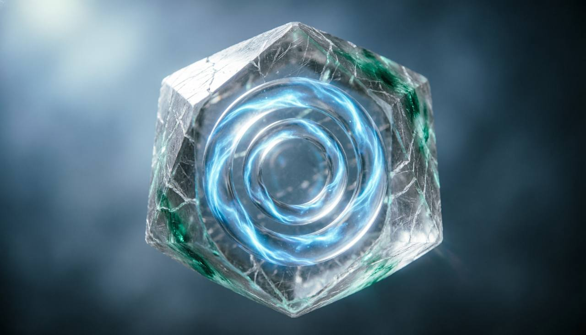

После возникновения неподдающегося контролю образа Край Неполной Формы изменился навсегда. Пространство стало ещё более зыбким: линии ландшафта то растягивались, то сжимались, нарушая привычные маршруты движения. Некоторые объекты, некогда полные и устойчивые, исчезли без следа, растворившись в хаосе слоёв. Время больше не текло равномерно. Прошлое местами вторгалось в настоящее, создавая наложения эпох. Жители яруса, которые раньше воспринимали порядок, начали терять ориентацию, а многие образы существ стали неполными или раздробленными. Для Люмиара последствия были двоякими: он смог спасти часть форм, укрепив их присутствие, но при этом понял, что часть мира уже невозможно восстановить.

После катастрофического события сам Люмиар изменился. Его форма стала более плотной в некоторых участках, а в других — ещё более зыбкой, отражая состояние ярусов, которые он пытался стабилизировать. Он больше не мог перемещаться свободно по Краю Неполной Формы: теперь каждая его попытка закрепить образ требовала огромного усилия, и некоторые формы приходилось оставлять без поддержки. Мир вокруг него тоже изменился. Пограничный ярус потерял часть своей целостности: пространство стало непредсказуемым, линии времени ещё сильнее наслаивались, а многие объекты исчезли навсегда. Эти изменения показали Люмиару, что ничто в Талларионе не остаётся прежним.
В результате нарушений Края Неполной Формы исчезли многие образы, которые нельзя было восстановить. Целые участки яруса превратились в пустоты, где пространство дрожит, но не удерживает объекты. Некоторые существа растворились, оставив лишь слабые эхо-следы в слоистом времени. Забыты были старые узоры ландшафта и связи между объектами. Эти утраты нельзя было заменить: новые образы формируются иначе, и старые структуры не повторяются.
Несмотря на разрушения, некоторые образы оказались удивительно устойчивыми. Их целостность поддерживалась не только вниманием Люмиара, но и внутренней силой формы: места, существа и события, которые обладали самоподдерживающейся структурой, продолжали существовать, словно мир сам выбирал, что следует сохранить. Эти остатки стали якорями стабильности и точкой опоры для новых форм. Некоторые существа адаптировались к изменившемуся ярусу, принимая новую текучую природу времени и пространства.
В конце хроники Люмиар делает последний акт фиксации: он сосредотачивается на остатках форм, удерживая их целостность хотя бы на мгновение. Этот акт не возвращает утраченное, но закрепляет то, что осталось, превращая зыбкие образы в стабильные, пусть и неполные фрагменты мира. Мир Таллариона теперь не такой, каким он был прежде. Он изменился, стал текучим и непредсказуемым, но зафиксированные образы дают шанс будущему восстановлению. Люмиар понимает, что его роль выполнена не полностью, но его действия оставляют след, который может служить точкой опоры для следующих эпох.